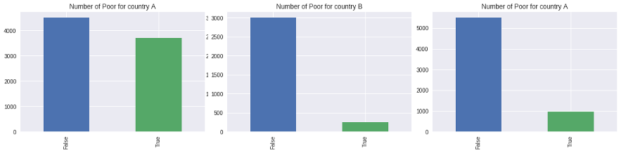

Measuring poverty remains an herculean task. This is because collection of detailed data on household is expensive and at the same time consuming. Use of machine learning techniques can assist organizations such as world bank and their development partner predict household’s poverty status more accurately and efficiently.Such accurate poverty measures provides a more solid empirical foundation of policy
Recently the world bank conducted the Poverty-T Tests: Predicting Poverty competition, which was hosted on Driven Data platform, similar to the kaggle competition platform.
Training and test data with anonymized qualitative variables from household survey of 3 different countries was provided. The challenge entailed building classification models to accurately classify household as eiter poor or not poor based on test data for the 3 countries. Mean log loss was used as the measure of model’s performance.
In this post, I will share my clasification model which acts as a good starting point for Machine Learning beginners.
To get started, the required modules are imported
%matplotlib inline
import os
import numpy as np
import pandas as pd
import matplotlib.pyplot as plt
import matplotlib.pyplot as plt
from operator import itemgetter
from sklearn import cross_validation, metrics
import datetime
from sklearn.metrics import (roc_curve, auc, accuracy_score, mean_squared_error)
from sklearn.model_selection import GridSearchCV
import lightgbm as lgb
from lightgbm import LGBMClassifier
from imblearn.over_sampling import SMOTE
from collections import Counter
# data directory
DATA_DIR = os.path.join('.', 'data', 'processed')
The data is then loaded. In this case only the household-leve data was loaded. The data can be downloaded from the competition’s data download page.
data_paths = {'A': {'train': os.path.join(DATA_DIR, 'A', 'A_hhold_train.csv'),
'test': os.path.join(DATA_DIR, 'A', 'A_hhold_test.csv')},
'B': {'train': os.path.join(DATA_DIR, 'B', 'B_hhold_train.csv'),
'test': os.path.join(DATA_DIR, 'B', 'B_hhold_test.csv')},
'C': {'train': os.path.join(DATA_DIR, 'C', 'C_hhold_train.csv'),
'test': os.path.join(DATA_DIR, 'C', 'C_hhold_test.csv')}}
# load training data
a_train = pd.read_csv(data_paths['A']['train'], index_col='id')
b_train = pd.read_csv(data_paths['B']['train'], index_col='id')
c_train = pd.read_csv(data_paths['C']['train'], index_col='id')
# load test data
# load test data
a_test = pd.read_csv(data_paths['A']['test'], index_col='id')
b_test = pd.read_csv(data_paths['B']['test'], index_col='id')
c_test = pd.read_csv(data_paths['C']['test'], index_col='id')
Data Pre-processing
The code below standardizes and converts object types to categoricals.
# Standardize features
def standardize(df, numeric_only=True):
numeric = df.select_dtypes(include=['int64', 'float64'])
# subtracy mean and divide by std
df[numeric.columns] = (numeric - numeric.mean()) / numeric.std()
return df
def pre_process_data(df, enforce_cols=None):
print("Input shape:\t{}".format(df.shape))
df = standardize(df)
print("After standardization {}".format(df.shape))
# create dummy variables for categoricals
df = pd.get_dummies(df)
print("After converting categoricals:\t{}".format(df.shape))
# match test set and training set columns
if enforce_cols is not None:
to_drop = np.setdiff1d(df.columns, enforce_cols)
to_add = np.setdiff1d(enforce_cols, df.columns)
df.drop(to_drop, axis=1, inplace=True)
df = df.assign(**{c: 0 for c in to_add})
df.fillna(0, inplace=True)
return df
We call the above functions
# pre-process the training data
aX_train = pre_process_data(a_train.drop('poor', axis=1))
ay_train = np.ravel(a_train.poor)
bX_train = pre_process_data(b_train.drop('poor', axis=1))
by_train = np.ravel(b_train.poor)
cX_train = pre_process_data(c_train.drop('poor', axis=1))
cy_train = np.ravel(c_train.poor)
# Pre-process test data
a_test = pre_process_data(a_test, enforce_cols=aX_train.columns)
b_test = pre_process_data(b_test, enforce_cols=bX_train.columns)
c_test = pre_process_data(c_test, enforce_cols=cX_train.columns)
How is the distribution of the dataset?

It is evident from the above visualizations that countries B and C’s dataset was imbalanced. These datasets were resampled using Synthetic Minority Over-sampling Technique (SMOTE) in order to Boost the prediction accuracy. Follow this link to learn more about dealing with imbalanced classes in machine learning.
sm = SMOTE(random_state=12, ratio = 1.0)
# upsample b
bX_train_sm, by_train_sm = sm.fit_sample(bX_train, by_train)
print ("Distribution of class labels before resampling {}".format(Counter(by_train)))
print ("Distribution of class labels after resampling {}".format(Counter(by_train_sm)))
#upsample c
cX_train_sm, cy_train_sm = sm.fit_sample(cX_train, cy_train)
print ("Distribution of class labels before resampling {}".format(Counter(cy_train)))
print ("Distribution of class labels after resampling {}".format(Counter(cy_train_sm)))
Hyperparameter Optimization and Model Fitting This is arguably the most important step and as a matter of fact the main determinant of classification accuracy. Lightgbm, a gradient boosting framework by microsoft that uses tree based learning algorithms Grid search was used to determine the best parameters that yield an optimal model which minimizes the log loss.
def create_model (features, labels, **kwargs):
params = {'boosting_type': 'gbdt',
'max_depth' : -1,
'objective': 'binary',
'nthread': 5, # Updated from nthread
'num_leaves': 64,
'learning_rate': 0.05,
'max_bin': 512,
'subsample_for_bin': 200,
'subsample': 1,
'subsample_freq': 1,
'colsample_bytree': 0.8,
'reg_alpha': 5,
'reg_lambda': 10,
'min_split_gain': 0.5,
'min_child_weight': 1,
'min_child_samples': 5,
'scale_pos_weight': 1,
'num_class' : 1,
'metric' : 'binary_logloss'}
# Create parameters to search
gridParams = {
'learning_rate': [0.01, 0.1],
'n_estimators': [50,100],
'num_leaves': [6,8,12,16],
'boosting_type' : ['gbdt'],
'objective' : ['binary'],
'random_state' : [501], # Updated from 'seed'
'colsample_bytree' : [0.64, 0.65, 0.66],
'subsample' : [0.7,0.75],
'reg_alpha' : [1,1.2],
'reg_lambda' : [1,1.2,1.4],
}
# Create classifier to use. Note in this case the parameters have to be input manually; not as a dict!
mdl = lgb.LGBMClassifier(boosting_type= 'gbdt',
objective = 'binary',
n_jobs = 5, # Updated from 'nthread'
silent = True,
max_depth = params['max_depth'],
max_bin = params['max_bin'],
subsample_for_bin = params['subsample_for_bin'],
subsample = params['subsample'],
subsample_freq = params['subsample_freq'],
min_split_gain = params['min_split_gain'],
min_child_weight = params['min_child_weight'],
min_child_samples = params['min_child_samples'],
scale_pos_weight = params['scale_pos_weight'])
# To view the default model params:
mdl.get_params().keys()
# Create the grid
grid = GridSearchCV(mdl, gridParams, verbose=0, cv=4, n_jobs=-1)
# Run the grid
grid.fit(features, labels)
# Print the best parameters found
print(grid.best_params_)
print(grid.best_score_)
# Using parameters already set above, replace in the best from the grid search
params['colsample_bytree'] = grid.best_params_['colsample_bytree']
params['learning_rate'] = grid.best_params_['learning_rate']
params['num_leaves'] = grid.best_params_['num_leaves']
params['reg_alpha'] = grid.best_params_['reg_alpha']
params['reg_lambda'] = grid.best_params_['reg_lambda']
params['subsample'] = grid.best_params_['subsample']
return mdl
Training the model
model_a = create_model(aX_train, ay_train)
model_b = create_model(bX_train_sm, by_train_sm)
model_c = create_model(cX_train_sm, cy_train_sm)
Make predictions
a_preds = model_a.predict_proba(a_test)
b_preds = model_b.predict_proba(b_test)
c_preds = model_c.predict_proba(c_test)
The competition attracted a total of 2310 competitors. Though I was not able to make it to the price category, I managed to rank among the top 20%. As a beginner and this being my inaugural machine learning competition, participating in the competition offered a great learning experience